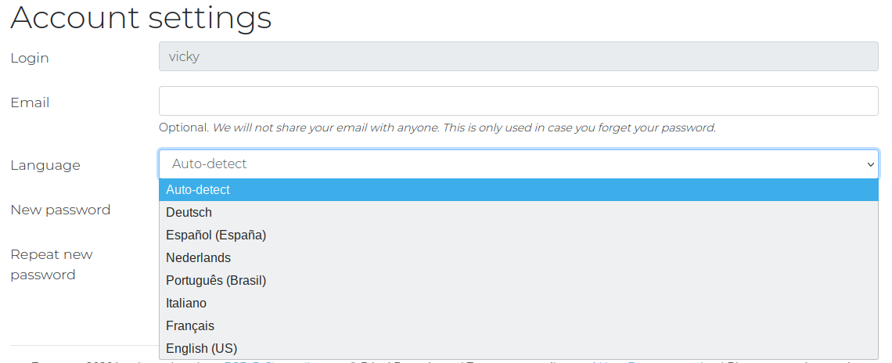
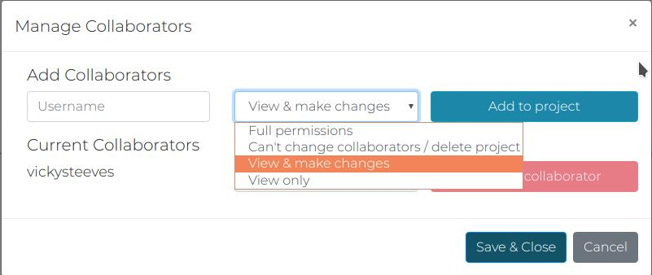
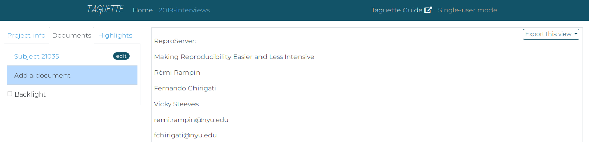
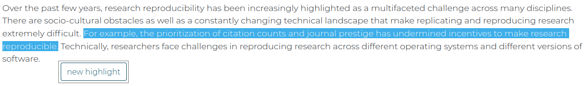
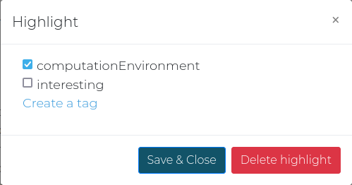
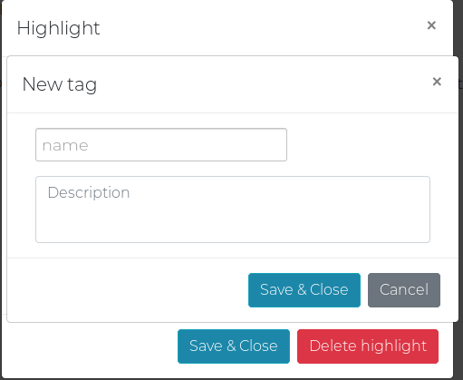
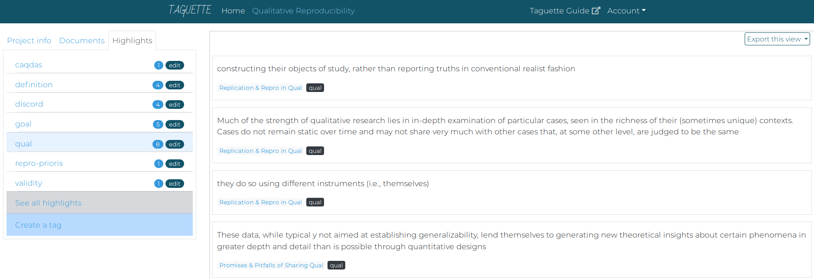
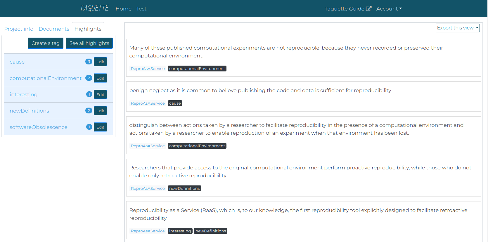
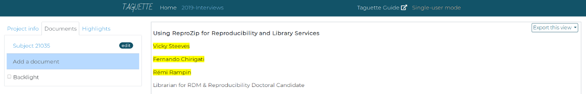
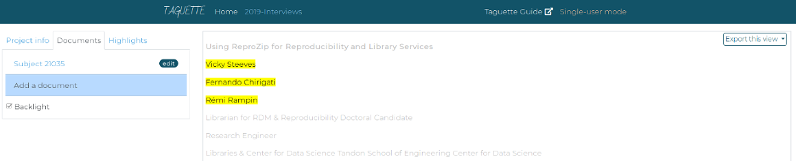

{# TRANSLATORS: Navigation menu #}{% trans %}Explore the guide:{% endtrans %}
- {% trans %}Open Taguette{% endtrans %}
- {% trans %}Start a project{% endtrans %}
- {% trans %}Upload materials{% endtrans %}
- {% trans %}Change interface language (server only){% endtrans %}
- {% trans %}Add collaborators (server only){% endtrans %}
- {% trans %}Create tags{% endtrans %}
- {% trans %}Change/delete tags{% endtrans %}
- {% trans %}Merge tags{% endtrans %}
- {% trans %}Highlight materials{% endtrans %}
- {% trans %}View tagged materials{% endtrans %}
- {% trans %}Export options{% endtrans %}
{% trans %}Getting started with TAGUETTE{% endtrans %}
{% trans %} Open Taguette{% endtrans %}
{% trans %}If you've downloaded and installed Taguette on your computer, you should be able to double-click on the Taguette icon and start it up! You'll see the command line will pop up and be running. This is ok! Don't worry about the terminal but do leave it running. If you exit the terminal, Taguette will stop. Taguette should automatically pop up in your web browser, but if for some reason it doesn't, navigate to localhost:7465 to begin working on your projects! It should look something like this (if you're using Taguette on a server, you should see 'account' where 'single-user mode' is):
 {% endtrans %}
{% endtrans %}
{% trans %} Start a project{% endtrans %}
{% trans %}You will see a page that greets you as the admin and has a button to Create a project. Click that button and you'll be prompted to enter a Title and Description for your new project. This can be changed later on if you want.

Upon clicking Create, you'll be taken to the Project View, which has a left and a right pane. The left pane contains the information about your project information ('Project Info'), uploaded materials ('Documents'), and tags ('Highlights') as tabs. You can go between these tabs as you like. The right pane will render documents and will be the area where you'll do the highlighting and tagging.
 {% endtrans %}
{% endtrans %}
{% trans %} Upload materials{% endtrans %}
{% trans %}To get an idea of how to work in Taguette, let's upload a document and get you tagging! In the left pane, click on the Documents tab. You should see a button that says Add a document. Click that and pick just one document from your computer, either a: .pdf, .docx, .txt, .odt, .md, or .html.

Just one file to be uploaded. You'll be prompted to give the new document a Name (should be something human-readable, required) and Description (like a note about the file, optional). When you have picked a document and at least given it a name, click the Import button.

You should then see that file immediately in the Documents tab. If not, just refresh the page and it should be shown then. If you cannot see your document, you might be uploading a file type that Taguette cannot yet handle. Please let us know at hi@taguette.org.
{% endtrans %}{% trans %} Change interface language (server only){% endtrans %}
{% trans %}If you are working on app.taguette.org or hosting Taguette on your own server, you have the option to change the language of the interface. In the upper righthand corner, you should see a dropdown menu labeled "Account". Click that dropdown, and then click "Settings." You will see a dropdown menu in your profile settings to change the language that Taguette will be in. By default, it will auto-detect a language from your Internet browser.
If you do not see your language represented in this list, we would encourage you to add a translation via our Transifex project: https://www.transifex.com/remram44/taguette/ or by sending us a .po file via GitLab, instructions: https://gitlab.com/remram44/taguette/-/tree/master/po.
 {% endtrans %}{% trans %} Adding collaborators (server only){% endtrans %}
{% trans %}If you are working on app.taguette.org or hosting Taguette on your own server, you have the option to work with others! In the Project Info tab of your Taguette project, you should see a grey button labeled Manage Collaborators:

Click that and you should get a modal with the option to add and remove collaborators, as well as change their permissions on the project. You must add their Taguette username and pick from the list of permissions, click Add to project, and to make sure that you've fully added your collaborator, next click Save & Close.
You can add collaborators with the following permissions:
{% endtrans %}| {% trans %}Permission level{% endtrans %} | {% trans %}View project{% endtrans %} | {% trans %}Change highlights{% endtrans %} | {% trans %}Change tags{% endtrans %} | {% trans %}Add/delete documents{% endtrans %} | {% trans %}Change collaborators{% endtrans %} | {% trans %}Delete project{% endtrans %} |
|---|---|---|---|---|---|---|
| {# TRANSLATORS: Has to match the permission level name in the app #}{% trans %}Full permission{% endtrans %} | X | X | X | X | X | X |
| {# TRANSLATORS: Has to match the permission level name in the app #}{% trans %}Can't change collaborators/delete project{% endtrans %} | X | X | X | X | ||
| {# TRANSLATORS: Has to match the permission level name in the app #}{% trans %}View and make changes{% endtrans %} | X | X | X | |||
| {# TRANSLATORS: Has to match the permission level name in the app #}{% trans %}View Only{% endtrans %} | X |
{% trans %} Create Tags{% endtrans %}
{% trans %}Taguette ships with one existing tag (or codes, if you're familiar with qualitative research): interesting. This is just there to get you started -- you can add and remove tags as often as you'd like! To view all your existing tags, click the Highlights tab in the left pane. You will see a list of tags you have and a count of the number of times you have highlighted your materials with a given tag.

You should see a list of existing tags for the project - again, if you haven't added any yet, you will still see interesting. To add your own tags to this project, click Create a tag. You will get a popup asking you for the Name and Description of the tag you want to create:

After you give the tag a good name and a bit of description about what it means, you should see it added to the list in alphabetical order.
A note on hierarchical tagging: you can use any punctuation to make hierarchies. So tech.floss lives underneath tech. If I click on tech.floss, then I'll see only materials relating to that tag. If I click on tech, I'll see everything in that tag as well as tech.floss and any other sub-tag.
{% trans %} Delete/change Tags{% endtrans %}
{% trans %}You can also change or delete a tag by clicking the edit badge to the right of the name of the tag in the list. This will bring you back to the same popup - you can edit the name of the tag, its description, or you can click the grey Delete button next to the blue Save & Close button.
{% trans %} Merge Tags{% endtrans %}
{% trans %}If you want to merge one tag into another, you can also do this from the edit window. Click the edit badge to the right of the name of the tag in the list. This will bring you back to the same popup for editing and deleting a tag. Instead, if you click Merge, then you will be prompted to select the tag that you want to merge into. Once you select a tag and click Merge tags, then all the highlights for the first tag will be moved to the second tag.
{% trans %} Highlighting{% endtrans %}
{% trans %}Once uploaded, you should see the document in the 'Documents' tab. Click on it and you should see the contents of your document in the right pane. Once you see the text in the right pane, we can start highlighting it!
Select some text by left-clicking and dragging it over the text you'd like to highlight. Once you let go of your left-click, a pop-up that says new highlight will appear next to the highlighted text.
Click that pop-up, and you will get a list of existing tags from which to choose. You can select one or more tags to apply to the highlighted text.
If you want to add a tag instead of using one that already exists, then simply click Create a tag, and you'll be sent to the same popup where made tags earlier.
Once you make your tag, you'll be dropped back into the popup above where you should select a tag for the highlighted text. After you've checked off which tags you'd like to associate with the highlighted text, click Save & Close, and the text you've just tagged should now be highlighted with the color associated with the tag (e.g. bright yellow).
If you've accidentally tagged a section of text you didn't want to, you can delete it by clicking on the highlighted text. This will give you the same pop-up window that you used to tag it. Next to the save button, there is a red button called Delete highlight. Click that, and the tags will be removed from the text. It should no longer be highlighted.
{% endtrans %}{% trans %} View highlighted & tagged text{% endtrans %}
{% trans %}If you want to see all the highlighted text associated with a given tag, first go to the Highlights tab in the left pane. Click a tag, and in the right pane, you will see a list of quotes with a blue link to the document where they originated from and all their associated tags with a black badge. The tag on the left pane will also be highlighted:
If you want to see all the highlighted text for all documents and all tags, click See all highlights and you will see a list of quotes with a blue link to the document where they originated from and all their associated tags with a black badge:
You can also view the document with all its highlights by navigating to the Documents tab in the left pane. Then just click on the document you wish to view, and if you've highlighted it, you should see:
If you hover your mouse over a highlighted section of text, you will see tags in a tooltip to the right of your mouse cursor. To explore your highlighted document in a different way, you can try clicking on the Backlight checkbox. You can see it at the bottom of the pane. It will grey out all the non-highlighted text to make the highlighted text really pop. We found this to be a nice view for exploring the texts differently:
 {% endtrans %}{% trans %} Export Options{% endtrans %}
{% trans %}You can export everything out of Taguette that you put in: tags, highlights, codebooks, documents, and even the entire project!
To export the codebook of your project - this is a list of all the tags that you've created alongside their description - use the dropdown menu in the Project tab in the left pane of Taguette, underneath the project description. There is a variety of export options, including QDC (REFI-QDA standard), CSV (spreadsheet), XLSX (Microsoft Excel), DOCX (Microsoft Word), HTML, and PDF.
To export all the associated highlights for a given tag, navigate to the Highlights tab in the left pane, and click on the tag of the highlights you'd want to export. Then you can use the Export this view dropdown menu at the top right in the right pane. You will have a choice of HTML (a webpage), CSV, XLSX, DOCX (editable), or PDF (not easily editable). While you will see the document with all the highlights, right now you won't be able to tell from that doc which tags go with the highlights.
You will see all the highlighted text for the particular tag with information about each highlight right underneath it -- which document it came from, and which tags are associated with it. This is how it looks with the DOCX export:
To export all the tags with all associated highlights, navigate to the Highlights tab in the left pane, and click on See all highlights. Then you can use the Export this view dropdown menu at the top right in the right pane. Again, you will have a choice of HTML, DOCX, or PDF.
You will see all the highlighted text for all tags with information about it -- which document it came from, and which tags are associated with it. This is how it looks with the DOCX export:

To export the document that you've highlighted, first navigate to the Documents tab in the left pane, and click on the document that you want to export. Then you can use the Export this view dropdown menu at the top right in the right pane. Again, you will have a choice of HTML, DOCX, or PDF.
You will see the document with your highlight in yellow, and the associated tag(s) next to the highlighted text, itself highlighted in light red and in brackets. Yellow = quote, light red = tag(s). This is how it looks with the DOCX export:
You can also import and export projects in Taguette! To export your project, go to the Project Info tab in the left pane. You should see a button that says Export project. Click that, and you should get a download started of a SQLite3 file. This holds your Taguette project, all files, as well as all highlights and codes:
To import your project onto another instance of Taguette (for instance, a locally running copy on your computer or another server), go to the welcome screen in Taguette and click "Import a project file":
From there, you select a project to upload. It should have the SQLite3 file extension to be uploaded. Click Browse and select the file. Taguette will confirm on this screen the name of the project, and once you hit "Import", all project materials will be imported!
If you want to browse the database directly, you can find documentation about the schema in our internal documentation.
{% endtrans %}